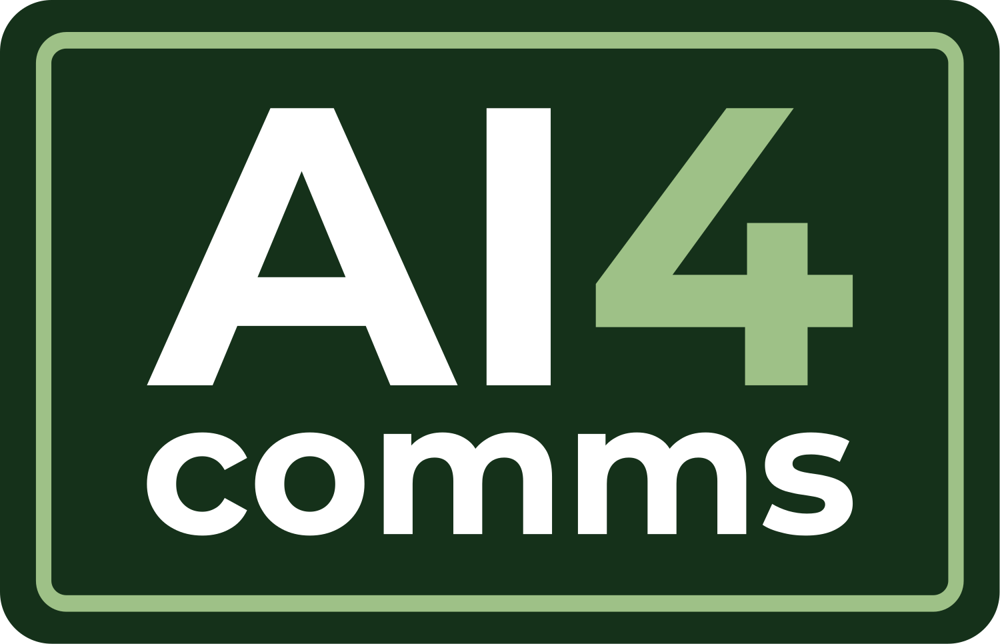
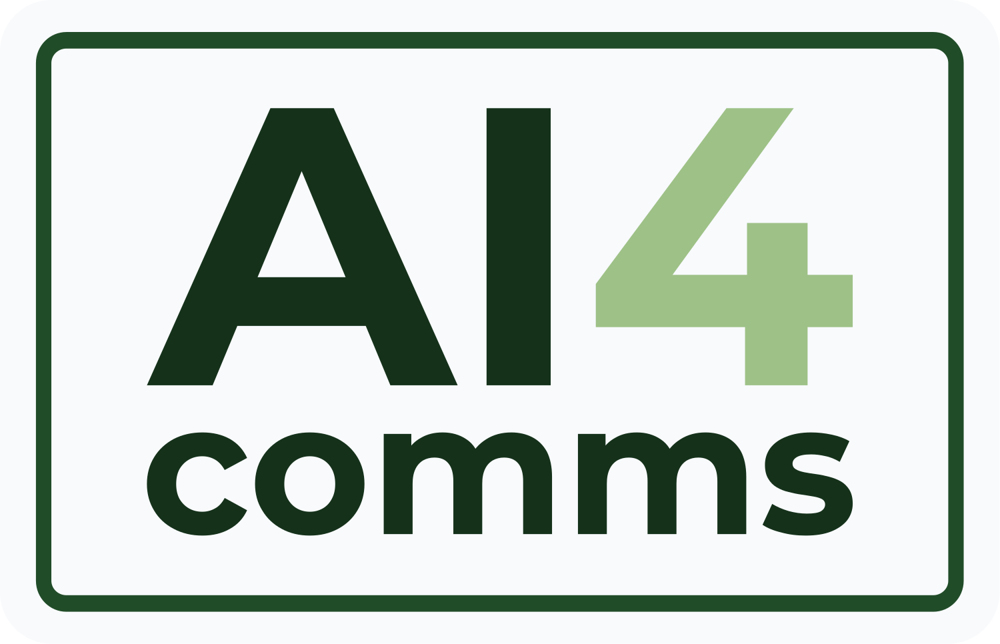
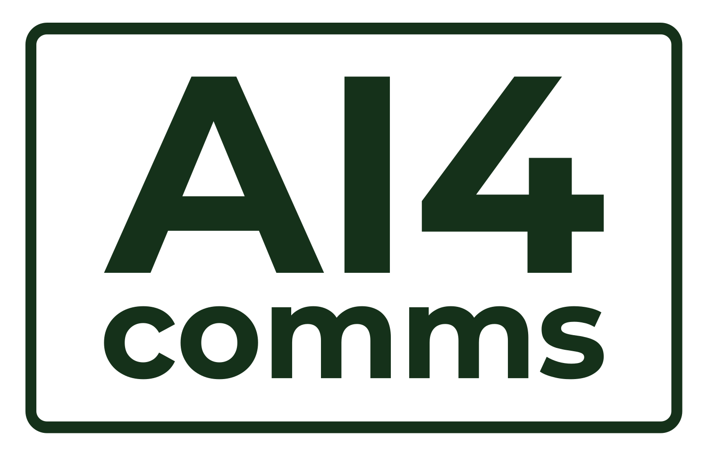

Reading the board: the left/right panels of each card are the surfaces that variant is meant for. If a logo looks wrong on a surface, that's the point — it tells us which variant to reach for where.
One mark, five surfaces
Colour variants
1 · Primary
The deployed mark — dark canopy panel. Default for all light backgrounds.on white

on paper · small
KeepDrop
2 · Reversed (paper chip)
Light chip for placing on canopy / dark sections where the dark panel would vanish.on canopy

on pine · small
KeepDrop
3 · Knockout (outlined, white + sage 4)
Transparent panel, white outline & letters, sage "4". For photos and immersive dark surfaces.on canopy gradient

on photo / dark surface
KeepDrop
4 · Mono canopy (one colour)
Single-ink canopy — stamps, faxes, one-colour print, embossing on light.on white

on mist · small
KeepDrop
5 · Mono white (one colour)
Single-ink white — one-colour reversed print, watermarks on dark.on canopy

on ink · small
KeepDrop
Small-scale mark for tabs & documents
Favicon
The current favicon is the whole panel shrunk — illegible below ~48px (all you see is a green blob). A favicon should carry only
AI4 in a square tile. Pick a direction; final PNGs (16/32/180/192) are produced after.AI4
AI4
AI4
Canopy tile ✓ rec
Dark green tile, white "AI", sage "4". Matches the primary logo panel.
AI4
AI4
AI4
Sage tile
Light sage tile, canopy letters. Brighter, pops in a busy tab bar.
AI4
AI4
AI4
Paper tile
Near-white tile, canopy "AI", pine "4". Quiet, light-mode-native.
AI4
AI4
AI4
Outline tile
Transparent, canopy outline + letters, sage "4". Blends on any light chrome.
AI4 ai4-comms.com — Home
AI4 AI4comms — Voorstel.pdf